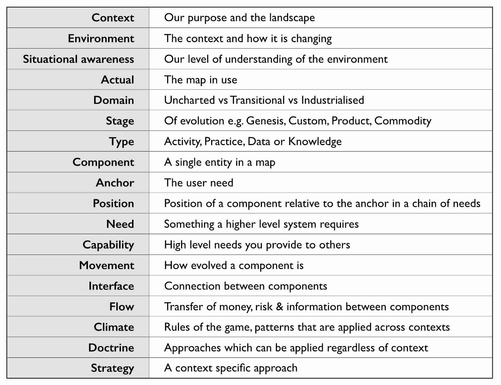
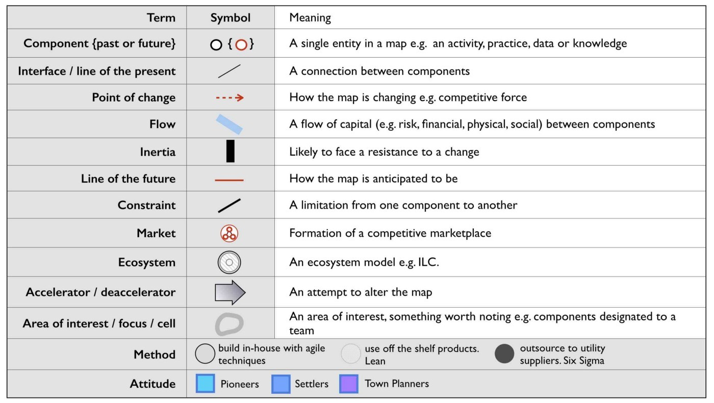
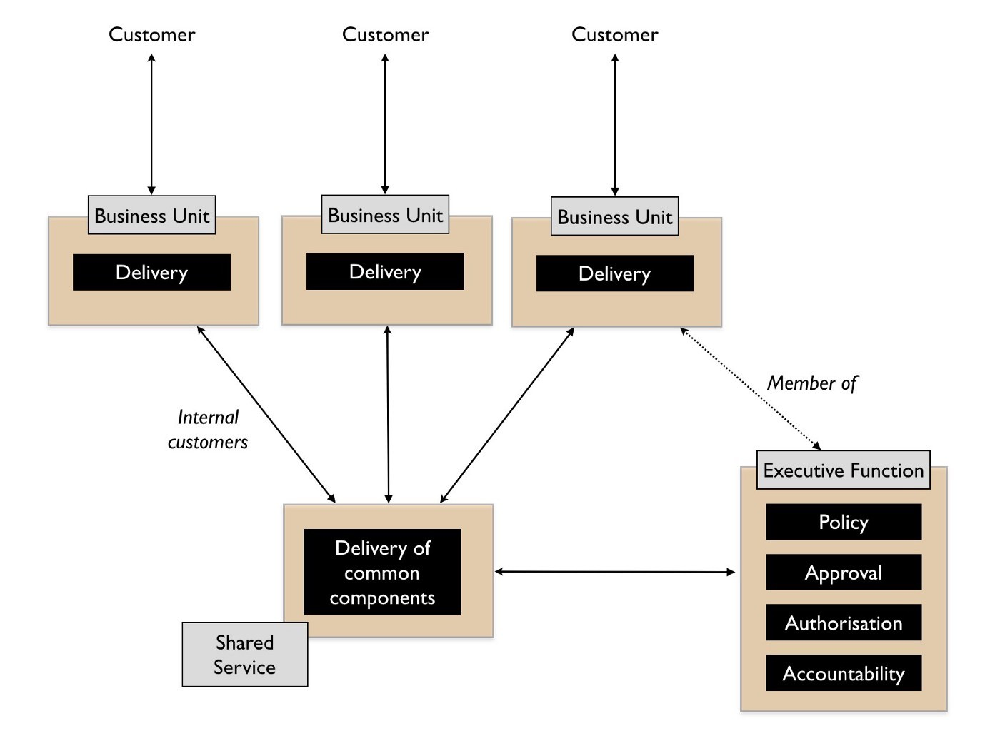
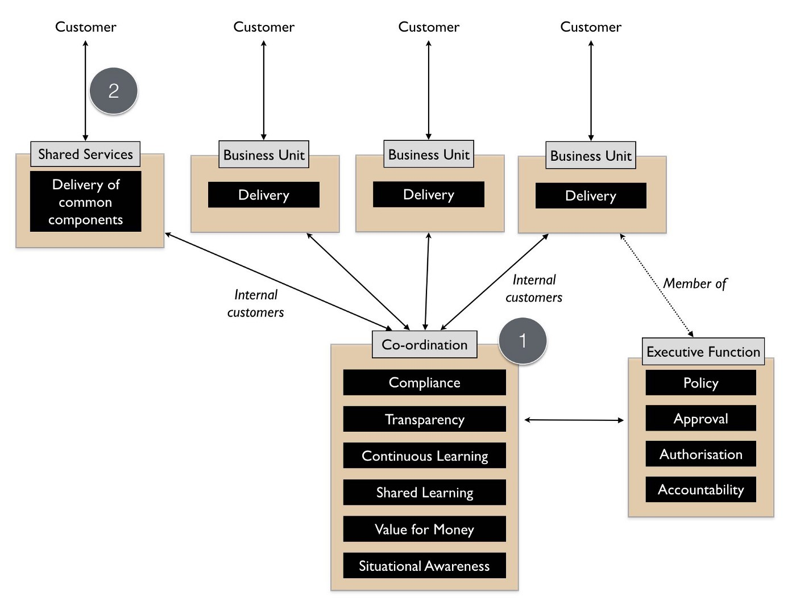
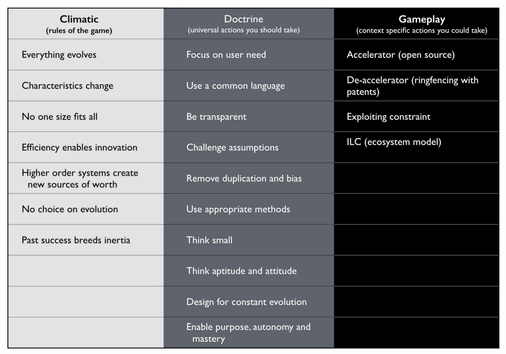
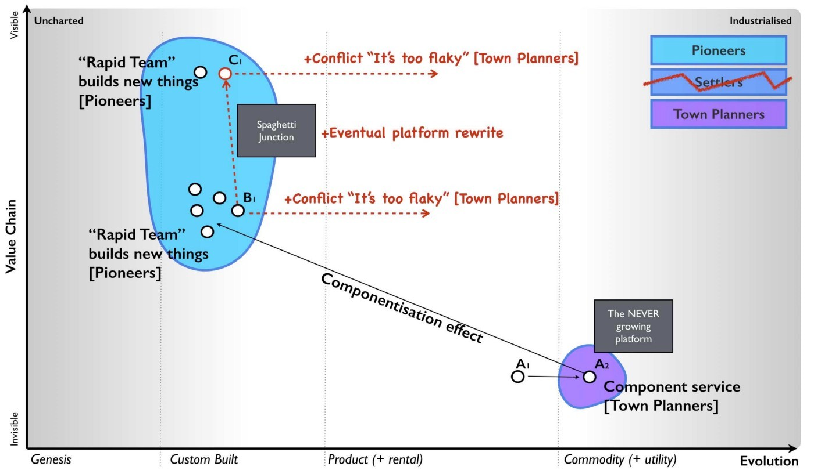
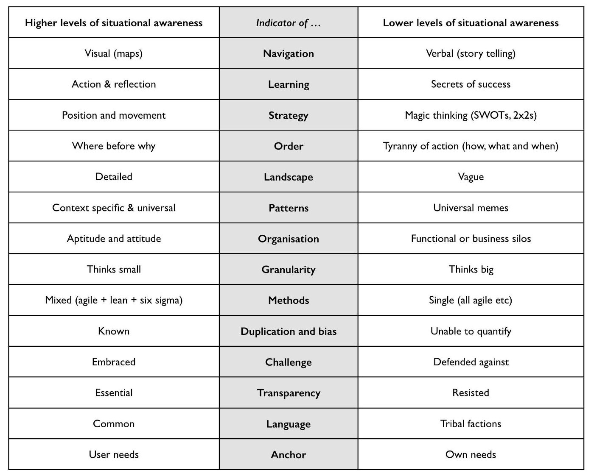

Chapter 6
20 min read
I often talk about that wise executive that I met in the Arts hotel of Barcelona. I’ll jump ahead in the story and let you into a little secret. He didn’t have a clue either and I wasn’t the only person faking at being an executive. However, I didn’t find this out until six years after I had started mapping when someone pointed it out to me. I had always assumed that there was some secret tome out there and mapping was just my poor man’s way of emulating what everyone else was already doing. It turned out that most of the industry was instead fighting battles with little to no understanding of the landscape. It’s like generals fighting without maps. It boils everything down to luck and individual heroism.
When I discovered this, and it was an almighty shock, I started to question the trove of business strategy books in my small library. I had an onerous task of going through it all and categorising individual pieces as doctrine, climatic pattern, context specific or just plain luck. These days, when someone tells me they know strategy then I ask them for a map of their business. If they can’t show me it, then regardless of their claims I take a skeptical position. They probably don’t know as much as they hope they do. They might even be more dangerous than this as it’s rarely the unknown that gets you but what we think we know but don’t.
This doesn’t mean I think people are daft but instead that understanding your landscape, the context that you’re competing in and having a modicum of situational awareness is not a luxury for strategy, it is at the very core of it. Inspiring vision statements, well trained forces, a strong culture and good technology will not save you if you fail to understand the landscape, the position of forces and their size and capabilities. Colonel Custer is a worthy lesson here and even he had maps which were better than most corporates today. I’ve seen billions wasted by companies that have charged into battles that they have no hope of winning. I’ve seen endless SWOT diagrams, stories and other magic thinking used to justify such actions. I’ve also seen others tear apart industries with ease.
Unfortunately, for those who lack some form of military background then situational awareness is rarely a topic of discussion. It’s often a struggle to make executives appreciate that it might matter, that the secrets of success they’ve recently read about might not work everywhere and you have to apply thought to the landscape. It’s the same with chess. I can show you the board (a map) and then teach you the rules of the game (climatic patterns), universally useful principles like supporting or pinning pieces (doctrine) and then specific moves like Fool’s mate (context specific gameplay). However, even with all this then you still have to apply thought and decide where you’re going to move or use some form of computer to work through billions of permutations. There is no magic guide or 2x2 solution. Games can teach us a lot about management.
In more recent years, I’ve even started to recommend that executives spend a month or two in some form of coaching that involves playing a massive multiplayer online role playing game (MMORPG) such as World of Warcraft (WoW). You might think that this sounds like goofing off from the real work of business but for those who are uninitiated then there are some basic practices that an MMORPG will teach you. These include: -
The importance of situational awareness. Before launching your team of elves and dwarves into the midst of a battle then the first thing you do is scout out the landscape and improve your situational awareness. Understanding the landscape is critical to strategic play, to learning, to using force multipliers and to not getting spanked i.e. beaten soundly by the opponent. Play the game long enough and you’ll know this by instinct along with moaning at players who haven’t bothered to look at the map hence wasting both their and your time with constant questions of “Where is this? or “How do we get there?”
The importance of aptitude. The biggest battles require a multitude of aptitudes from damage (those who do our spanking usually from range) to tanking (defensive protection) to healing (those tanks get spanked a lot and need healing) to crowd control (those mage sleep spells aren’t there for just looking at). The way you play and how the roles are deployed depends upon the scenario. Of course, without situational awareness then you’re at a huge disadvantage as you can often turn up with precisely the wrong sort of forces.
The importance of collaboration. A multitude of roles requires team play which means communication, co-ordination and acting in the interests of the team. It also helps if everyone uses a common language such as a map.
The importance of preparation. There’s no point turning upto the fight with an assortment of weapons if you don’t know how to use them. The largest guilds in some of these MMORPGs have many hundreds to thousands of players supported with extensive wikis, communication mechanisms, training and development, tactical game plays, UI engineering, structure, leadership, specialist cells and information systems. These provide a systematic mechanism of learning.
So, how does an MMORPG compare to business? In general, we don’t have maps in business. Most companies suffer from poor situational awareness being caught out by predictable changes. The most telling factor here is that business strategy is normally a tyranny of action — how, what and when — as opposed to awareness — where and why. On the whole, we do a bit better at recognising that multiple aptitudes are needed. However, we often fall down by not considering attitude, the context and then compound this with isolation (operation in silos). We certainly try when it comes to team play, often having team building exercises which can be a bit hit or miss.
We also tend to complain about communication despite the plethora of tools available. This can usually be traced back again to poor situational awareness — if we don’t know the landscape and fail to create a plan of attack based upon this, replacing instead with vague notions of vision or a story then it becomes difficult to communicate how things are actually going. It’s far better that the question “Where are you” receives a response of a co-ordinate on a map than a response of “I’ve just walked along a path, I’m by a tree and I can see lots of orcs. The sun is shining”.
In fact, abundant communication mechanisms rather than efficient communication can itself become a problem without good situational awareness as new players constantly ask “where should we go” as they run around in a daze. This can take up valuable time from other team members and weaken your overall strength. Preparation itself is almost non-existent in corporates. In some areas we might attempt scenario planning and a few exec games about imagining you’re a startup trying to disrupt your business but on the whole we’re often so busy with immediate work such as firefighting and keeping up with competitors that we create little time to prepare.
There’s an awful lot to be said for learning about these aspects from online games. Anyone under the illusion that business is some bastion of strategic play should spend a few minutes watching an experienced group run an organised raid. Those people tend to use levels of strategic play and doctrine that most businesses can only dream of. Fortunately, in business we’re often up against other organisations that equally lack situational awareness, suffer from isolation, have weak team play, ineffective but abundant communication and lack preparation.
The effect is somewhat remarkably similar to a group of inexperienced World of Warcraft players just charging at each other with cries of “Attack” followed by “Will someone heal me!” An exciting brawl of chaos with often single participants — hero players, the Steve Jobs of your Elven army — making the difference. Of course, face either team or in fact both teams against an experienced and well-rehearsed group then it stops becoming a brawl and starts becoming a massacre. The healers get wiped first, followed by crowd control, tanks and then poor and undefended damage dealers.
In the world of business, there are some really dangerous groups out there. Don’t expect to go up against them with the usual ‘Here’s the vision, we’ve got great people … now charge!’ approach. It’s far more sensible to find a profitable exit in order to fight another day. That’s a hint to those gaming companies starting to be concerned about Amazon’s encroachment into their space with Lumberyard. Either start learning from your own online players or find a new industry to bunker down in. Finally, don’t expect to just to read a few chapters on mapping or play a couple of games and an instantly transform into a master of strategy, there is a long journey ahead of you.
There are a couple of general tips, common terms and diagrammatic forms that I apply to mapping itself. My tips include: -
All models are wrong; some are merely useful.
Mapping is not the answer, it’s simply a guide. Hence don’t try to create the perfect map, the key is to produce good enough that you can collaborate around and this requires you to share and open yourself up to challenge. Also, you’ll likely to use other tools alongside mapping when scenario planning and examining the viability of different points of attack. This can include financial models to my current favourite of business model canvas.
Where before why
When thinking about strategy, the first thing you need to do is identify where you can attack before why here over there. It’ all about position (y-axis) and movement (x-axis).
Iterative and continuous learning
The entire strategy cycle is iterative and you’re going to have to follow the same path. Which means mapping is not going to be a one off exercise but something that happens all the time. Again the temptation is to map the entire landscape in some sort of “Deathstar” — large scale, all encompassing, doomed to fail — effort in order to create that perfect answer. You should instead embrace the uncertainty, think small and start somewhere (have a bias towards action). If you’re using mapping and it’s either taking a long time or doesn’t seem to help answer any of your questions, then stop. Don’t be afraid to find a better way of doing this. No model is perfect.
Learn yourself
If you are responsible for strategy, then you need to learn to play the game yourself and take responsibility for it. I often give strategy consultants a hard time but this doesn’t mean they don’t have a use. Don’t however rely on third parties to give you an answer, instead use them to help you challenge your strategy and to learn new forms of gameplay.
Terms
There are numerous terms associated with mapping. I’m often guilty of using them without clearly explaining to others, so in order to rectify this I’ve provided the most common in figure 60.
Figure 60 — Terms

Symbols
Maps are obviously visual and whilst they are far from the ordinance survey maps of geography, it’s useful to have a common lexicon of symbols. In figure 61, I’ve provided the ones I use.
Figure 61 — Symbols

A nod to early terms
Mapping itself has evolved over time hence the terms I used in the past are slightly different to the terms I use today. These cosmetic changes are purely to help refine the craft, the underlying meaning has remained constant.
Most organisations have structures in place that can be used to embed mapping whether it’s an architectural group or an office of the CEO or a business relationship function or some other home. Typically, in a distributed organisation then you normally have the business units that are responsible for delivery, some form of executive function that covers policy, approval and accountability and a common or shared services supply group that provides some element of commonality as per figure 62.
Figure 62 — Common structure

However, the common components provided are often a bit hit or miss. Without a form of mapping then it’s difficult to find what is duplicated and how it should be provided between the different business units. It will often degenerate into plucking things from the air. There also tends to be an element of political conflict between the business units and the shared services and in the worst cases the shared services function can be viewed as a hindrance.
To resolve this, we need to separate out the delivery of shared services from the identification of what is common. I’ve found the best way to achieve this is not to remove budget from the business units (often a political bone of contention) but instead to introduce a co-ordination function. The role of the co-ordination function is to encourage compliance to policy (doctrine) often via a spend control mechanism and to enable sharing between the business units through the use of maps. This doesn’t require some big bang overhaul but usually the formalisation of an existing structure e.g. Office of an executive function or an architectural board can be converted into this role. When spend control is used then a policy limit (e.g. £100K) should be set above which any project must be mapped and the map sent to the co-ordination function. The function can then analyse the map, make recommendations and introduce elements of transparency and challenge within the organisation. As more maps are gathered then the function can also identify patterns for common services. This should become a relatively quick process lasting a few hours from initiation to recommendation.
It’s through such a function that other forms of doctrine such as cell based structure, use of Pioneer-Settler-Town Planner along with more context specific gameplay can be introduced into the business units. I’ve summarised this in figure 63, adding in the co-ordination function (point 1). I’ve also noted that your shared service (point 2) should be elevated to a business unit and not just limit itself to provision of common components within a organisation but look to public provision, particularly if you intend to run an ecosystem model such as ILC. If it’s important enough for you to create a shared and common service, then there either exists an outside market opportunity or you’re just rebuilding what already exists in the market.
Figure 63— Adding co-ordination

With your shared services group, then you should aim to populate it with small cells of town planners providing industrialised components. Your business units will tend to become dominated by cells of pioneers and settlers providing custom to product and rental services. Your co-ordination function will mainly become settlers focused on ensuring transparency and learning within the organisation itself. However, this is over time.
It’s really important that if this is your first co-ordination function (in UK Government this was called Spend Control) that it is staffed by people with experience of “future” ways of operating i.e. you want them to challenge the organisation and pioneers can be useful here. In 2016, I still see companies creating a digital team and pointing the way by giving an example of good but without any mechanism to deal with the existing organisation. This invariably creates a them vs us situation and without any mechanism to force challenge then you’re likely to revert back to the past. The corporate antibodies will overwhelm you
Hence start with a small co-ordination team of highly skilled people helping other business units create, share maps and learn from them. You will probably find that some business units start to offer their own home grown capabilities as common components to other business units. Don’t discourage these emergent behaviours. Whilst there may be an element of opportunistic “empire building” involved, if units are sharing and learning from maps then this is supportive. You can always migrate those components to a shared services group at a later date. The one thing to be careful of is business units trying to subvert the process e.g. trying to find exclusions to sharing or spend control.
Often some will claim they are “too busy to write a map” or “it’s too complex”. For me, the idea that someone could be willing to spend £100K on something they can’t map sets alarm bells ringing. For such an expense we should know what the user needs are and what is involved. Mapping provides us the means to reflect on this, to challenge the assumptions, to question what is being considered and to demonstrate we have thought about it. Be warned however, these excuses are often code for resistance to sharing due to concerns that it will reduce their power base within an organisation. Knowledge is power often translates to shared knowledge is less power for me! If you ever want to stop the self-harm that occurs in corporations from the endless duplication and bias to the poor gameplay, then you need to counter this. Expect a few battles and a few bruises.
You’ll also have lots of people claim that “we have architecture groups” or “good communication”. Most federated organisations have hundreds of duplicated examples of the same thing being built and communication is anything but effective. Ask yourself, how many pet IoT or AI projects doing roughly the same thing are actually going on in your organisation right now? If you’re of any size the answer is “don’t know” or “not sure” then from experience, it’s going to be vastly more than whatever number you might guess at. Without a communication tool such as mapping and some form of co-ordination function then you will be unlikely to find out. Hence use this issue of duplication to help introduce a common language and the sharing of information.
Be warned though, resistance to this sharing will clamour for exclusions and protection of silos. Fall for this and any emergent sharing will be lost. Also keep an eye on communication mechanism from chat to wikis because they can be used to consolidate resistance as much as enable change. You’ll have to be firm.
To the question, shouldn’t the co-ordination function be part of the executive function then I’d answer yes. In my company, the co-ordination function was the executive team. In a larger company you will want to create a specialised unit. Remember, you are unlikely to have any maps of your landscape and your SVPs & VPs won’t be able to magic them out of hand. They’ll need support and help as much of this will be as unfamiliar to them as it was for me.
This entire book is dedicated to a process of continuous learning, however it’s more important for me to demonstrate how to achieve this (the strategy cycle) rather than the specifics of particular patterns. Once you have the basics, you will learn the patterns for yourself. However, it’s also worth me recapping as we go along this journey. In figure 64, I provided the basic patterns so far examined.
Figure 64 — Patterns covered

I’m a great believer in using anti-patterns to examine the effect of not doing something. In this case, what are the anti-patterns for mapping? In general, they will be the reverse of the doctrine that is developed from mapping along with a failure to cope with climatic patterns and incorrect use of context specific play. We can use this to describe what an organisation that doesn’t understand its landscape should looks like. I often use this as a way of analysing competitors but be careful, there’s a whole topic of misdirection that we haven’t touched upon yet. The anti-pattern organisation will look something like this.
Fails to focus on user needs.
Has an inability to describe its user needs and often confuses its own needs — profitability, revenue, data acquisition — with those of its customers.
Fails to use a common language.
Uses multiple different ways of describing the same problem space e.g. box and wire diagrams, business process diagrams and stories. Often suffers from confusion and misalignment. None of the tools used will meet those basic characteristics of any map — visual, context specific, position (relative to an anchor), movement and components.
Fails to be transparent.
Has difficulty in answering basic questions such as “How many IoT projects are we building?” Information tends to be guarded in silos.
Fails to challenge assumption.
Action is often taken based upon memes or Hippo (highest paid person’s opinion) or popular articles in the HBR (Harvard Business Review). Often parts of the organisation will admit to building things they know won’t work.
Fails to remove duplication and bias.
The scale of duplication is excessive and exceeds in practice what people expect. Any investigation will discover groups custom building what exists at a commodity in the outside world, their very own Thomas Thwaite toaster. Often resistance is given to changing this because it is somehow unique despite any inability of the group to explain user needs.
Fails to use appropriate methods.
Tends towards single size methods across the organisation e.g. “outsource all of IT” or “use Agile everywhere”. This can often be accompanied with a yo-yo between one method (the old emperor) and a new naked emperor based upon its success in a specific example (outcome bias). Expect to hear statements of the form “Six Sigma worked on this project, it’ll work on every project”.
Fails to think small.
Tends toward big scale efforts (e.g. Deathstar projects) and big departments. This can include frequent major platform re-engineering efforts or major re-organisations.
Fails to think aptitude and attitude.
Tends to consider all of a specific aptitude (e.g. finance, operations or IT) as though it’s one thing. Promotes a mantra of there is only “IT” rather than a nuanced message of multiple types. Tends to create general training courses covering the entire subject e.g. “Let’s send everyone on agile training”
Fails to design for constant evolution.
Tends to bolt on new organisational structures as new memes appear. A cloud department, a digital department, a big data group etc. There is another example of what can go wrong here which is best explained by the examination of dual, bimodal & twin speed IT concepts that have become all the rage. The basic premise is that we have two groups, one of which is focused on the new (often the digital) and one is focused on the core operational aspects of the company. It sounds sensible but as I discovered long ago it creates a headache best explained through mapping, see figure 65.
Figure 65— The dual problem

This figure is derived from figure 42 (chapter 4) and I’ve simply cut out the middle “settler” group. What happens is your town planner build a new component service (A1 to A2) which your pioneers build upon (B1). All is working well so far until the pioneers ask the town planners to take over the new activity. The response will generally be negative as in “it’s too flaky” because it hasn’t become a well formed product yet, it’s unstable and it lacks documentation as there is no-one managing its evolution. The pioneers also want to move on and so arguments ensue. Eventually the pioneers start building on top of their own component (B1 to C1). The net result is a never growing platform and a increasingly unreliable spaghetti junction of new built upon new. This will negatively impact performance until someone suggests a “deathstar” like grand platform re-engineering effort.
Unfortunately, the new platform will suffer from the same problems when we start building upon it because the structural problem (the “missing” settlers) hasn’t been fixed. Unbeknownst to most, these dual structures might give a short term win but they will lead you down a path of never growing platforms, spaghetti junctions and costly platform rewrites. Great for consultants in re-organisation and flogging new memes but terrible if you’re actually a business trying to get something done in a sustainable manner.
Fails to enable purpose, mastery and autonomy.
There is often confusion within the organisation over its purpose combined with feelings of lacking control and inability to influence.
Fails to understand basic economic patterns.
Often conducts efficiency or innovation programmes without realising the connection between the two. Assumes it has choice on change (e.g. cloud) where none exists. Fails to recognise and cope with its own inertia caused by past success.
Fails to understand context specific play.
Has no existing language that enables it to understand context specific play. Often uses terms as memes e.g. open source, ecosystem, innovation but with no clear understanding of where they are appropriate.
Fails to understand the landscape.
Tends to not fully grasp the components and complexity within its own organisation. Often cannot describe its own basic capabilities.
Fails to understand strategy.
Tends to be dominated by statements that strategy is all about the why but cannot distinguish between the why of purpose and the why of movement. Has little discussion on position and movement combined with an inability to describe where it should attack or even the importance of understanding where before why. Often strategy is little more than a tyranny of action statements based upon meme copying and external advice.
Hence, if you’re unsure of where your organisation currently stands, use the above to help you reflect on the state of situational awareness within the company. I’ve provided this also as a comparison in figure 66 but do remember this is solely a guide for you to discuss and reflect upon your own organisation’s state.
Figure 66— Signals of

Alas, I haven’t found any books that deal with topographical intelligence in business (i.e. the use of maps and situational awareness) which is why after almost eight years of badgering I’m finally getting around to writing one. I’m a very reluctant writer and hopefully someone will take this and write a better book. That said, there are lots of other books that I’d recommend reading because of the general concepts they provide. I don’t necessarily agree with everything they state but these are definitely worth exploring. I find all of these books are worth spending time with.
Sun Tzu, the art of Warfare (Robert Ames translation)
Science, Strategy and War by Frans P.B. Osinga
Atlas of Military Strategy 1618–1878 by David Chandler.
The Simplicity Cycle by Dan Ward
Accidental Empires by Robert X. Cringely
Hierarchy Theory, The Challenge of Complex Systems by Howard H. Pattee
The Evolution of Technology by George Basalla
Thinking in Promises by Mark Burgess
Diffusion of Innovations, Everett Rogers.
Customer driven IT by David Moschella
Digitizing Government by Alan Brown, Jerry Fishenden and Mark Thompson
Learn or Die by Edward D.Hess
The Oxford Handbook of Innovation by Jan Fagerberg, David Mowery and Richard Nelson
The Starfish and the Spider, Ori Brafman and Rod Beckstrom
Does IT matter? by Nicholas Carr
Technological revolutions and financial capital, Carlota Perez
The Entrepreneurial State by Marriana Mazzucato
Topographical Intelligence and the American Civil War, Daniel D. Nettesheim.
The Intelligent Investor by Benjamin Graham
Cybernetics by Norbert Wiener
Systems Thinking by Jamshid Gharajedahi
The Age of Discontinuity by Peter F. Drucker
The Red Queen, William P. Barnett
There’s a lot of things I could recommend here. Obviously top of my list is practice mapping within your organisation. I’d also spend some time with the books above.
However, can I also strongly recommend that you go and play World of Warcraft if you have any doubts over the importance of situational awareness. I understand that Fernando Flores (former Finance Minister and Senator for the Chilean Government) runs an executive training course on this. I know it sounds daft but where better to learn how to play games than in a game?
In the next section of six chapters, I’m going to cover my Wilderness years and the formalisation of mapping as we loop around the strategy cycle again.